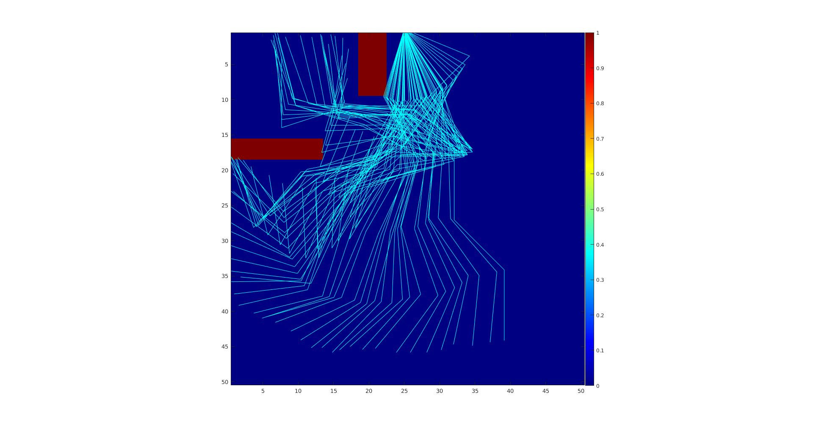
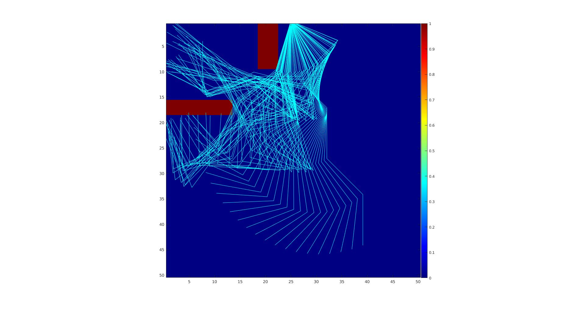
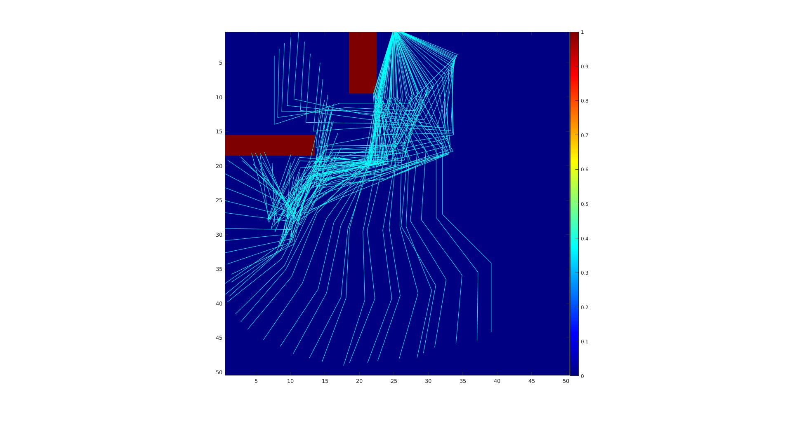
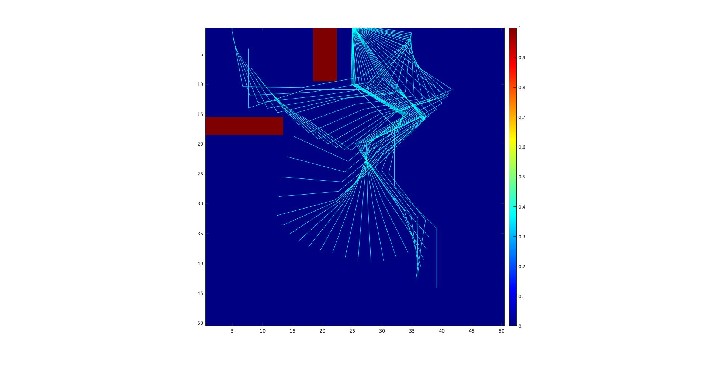

Mini project 2 · CMU 16-782
Mini project 2 · CMU 16-782
Planning for a high-DOF planar arm.
Four sampling-based planners built and benchmarked against each other: RRT, RRT-Connect, RRT* and PRM. The comparison is the point, and it comes out as a clean set of trades between speed, optimality and consistency.
Why sampling
A high-DOF arm cannot be planned by discretizing its configuration space, because the number of cells grows exponentially in the number of joints. Sampling-based planners sidestep this by never building the space at all: they draw random configurations, test only those for collision, and connect the valid ones into a tree or graph. What you give up is completeness in the strict sense; what you get is a planner that works in ten dimensions at all.
I implemented RRT, RRT-Connect and RRT* inside a shared RRTs class so the
common machinery could be reused, with separate build functions for each. Random samples
are drawn 85% of the time, with the other 15% drawn from a region near the goal to bias
growth in the right direction. PRM sits in its own ProbabilisticRoadmap class,
building a graph, connecting start and goal to it, then running A* over the roadmap to
answer the query.




The benchmark
I compiled six metrics across 20 runs per planner: average planning time, success rate within 5 seconds, average vertices generated, average path quality (total distance travelled, as the sum of RMS distances between adjacent configurations, where lower is better), path length in number of configurations, and the standard deviation in path quality, which captures how consistent a probabilistic planner is across repeated runs on the same query.
The numbers line up with what the algorithms are designed to do. RRT-Connect is the fastest of the trees and generates the fewest vertices, because growing from both start and goal meets in the middle. RRT* is the slowest, since it builds everything RRT does and then rewires on top, and in exchange it produces the best path quality of the three trees. The speed of RRT-Connect is paid for in quality and, more tellingly, in consistency: its standard deviation of 5.35 is the worst in the table, roughly double RRT*'s.
One number needs a caveat I kept from the write-up. PRM looks fast at 0.92 seconds, but that figure includes regenerating the roadmap on every single run. The whole point of a PRM is that the graph is built once and reused across many queries; measured that way it would be by far the fastest planner here. Its path length of 9 also is not comparable to the others, since it does not count the interpolated states between roadmap nodes.
What I would use, and when
RRT succeeds within 5 seconds 89% of the time, making it the slowest to find a solution, and the solution is not optimal. It offers no guarantee of reaching the goal state exactly, only a goal neighbourhood, and its growth is always biased toward the largest unexplored region. On map 2, with its many obstacles, RRT is more suitable than PRM. The goal-biased sampling I added helps drive the search; beyond that, the real gains would come from better data structures for nearest-neighbour queries, and post-processing the path.
RRT-Connect is probabilistically complete and, because trees extend from both start and goal, it reaches the goal itself rather than a neighbourhood. On map 1, with few obstacles, it is what I would choose. On map 2 its paths were noticeably suboptimal. Goal biasing does not help much here, since both ends are already growing toward each other.
RRT* is the one to use on map 2 if optimality matters and the extra runtime is acceptable. It is substantially more expensive and takes longer to reach a first solution, which is the real cost in a time-limited setting.
PRM is best for one-shot planning against a reusable roadmap. This was the hardest of the four to implement and my version does not work especially well: I had to relax parameters to get results on map 2 at all. Uniform sampling misses narrow passages when obstacles are dense, which costs connectivity, and I connected neighbours by radius rather than by k-nearest. Biasing samples toward obstacle boundaries and switching to a proper k-nearest structure are the fixes.
The spread behind the averages
The per-run data is worth more than the means. RRT's individual planning times range from 0.00015 seconds to 13.7 seconds, and RRT-Connect's from 0.000054 to 6.85. A handful of unlucky runs dominate the average entirely, which is the honest character of a randomized planner: most of the time it is nearly instant, and occasionally it is not, and no average communicates that. It is exactly why the standard deviation column earns its place in the table.